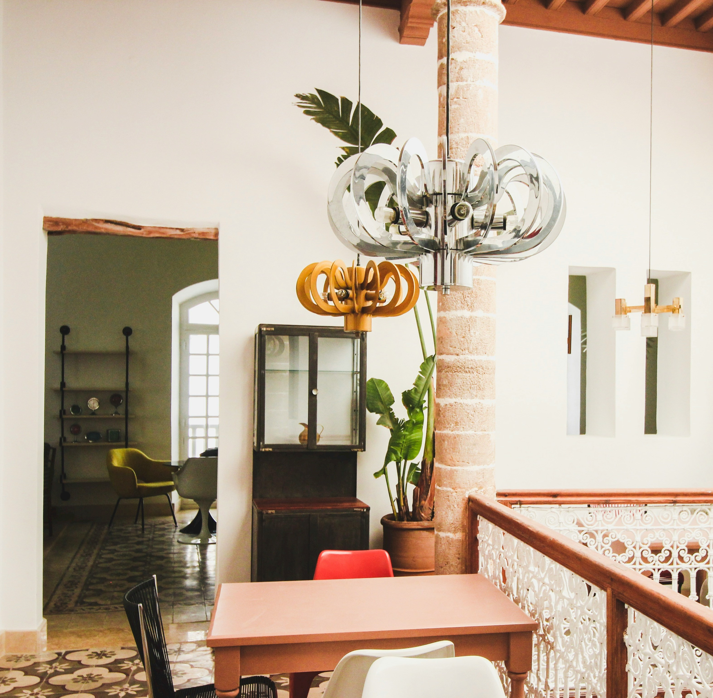

<!DOCTYPE html>
<html lang="en">

<head>
    <meta charset="UTF-8">
    <meta name="viewport" content="width=device-width, initial-scale=1.0">
    <link href="https://cdn.jsdelivr.net/npm/bootstrap@5.3.3/dist/css/bootstrap.min.css" rel="stylesheet"
        integrity="sha384-QWTKZyjpPEjISv5WaRU9OFeRpok6YctnYmDr5pNlyT2bRjXh0JMhjY6hW+ALEwIH" crossorigin="anonymous">
    <link rel="stylesheet" href="https://cdn.jsdelivr.net/npm/bootstrap-icons@1.11.1/font/bootstrap-icons.css"
        integrity="sha384-4LISF5TTJX/fLmGSxO53rV4miRxdg84mZsxmO8Rx5jGtp/LbrixFETvWa5a6sESd" crossorigin="anonymous">
    <link rel="stylesheet" href="style_blog.css" />
    <title>MakeHome</title>
</head>

<body>

</body>

</html>

<body>
    <section>
        <div class="container">
            <nav class="navbar navbar-expand-lg bg-light navbar-light fixed-top">
                <div class="container">
                    <a href="index.html" class="navbar-brand"><span style="font-weight: bold;">MakeHome</span></a>
                    <button class="navbar-toggler" type="button" data-bs-toggle="collapse" data-bs-target="#navmenu">
                        <span class="navbar-toggler-icon"></span>
                    </button>
                    <div class="collapse navbar-collapse" id="navmenu">
                        <ul class="navbar-nav ms-auto">
                            <li class="nav-item">
                                <a href="index.html" class="nav-link"><span style="font-weight: bold;">Strona główna</span></a>
                            </li>
                            <li class="nav-item">
                                <a href="blog.html" class="nav-link"><span style="font-weight: bold;">Blog</span></a>
                            </li>
                            <li class="nav-item">
                                <a href="contact.html" class="nav-link"><span style="font-weight: bold;">Kontakt</span></a>
                            </li>
                        </ul>
                    </div>
                </div>
            </nav>
        </div>
    </section>
 
    <div class="masthead" style="background-image: url('images/blog/large.jpg');">
        <div class="color-overlay">
            <div class="container d-none d-md-block">
                <h1>MakeHome</h1>
                <h6>Stwórz wymarzoną przestrzeń</h6>
                <h6>Ciesz się harmonią każdego dnia</h6>
            </div>
        </div>
    </div>
    

    <section class="p-5" id="helper">
        <div class="container">
            <div class="row  text-center">
                <div class="col-sm interior">
                    <div class="card" style="width: 16rem; height: 34rem;">
                        
                        <div class="card-body">
                            <p class="card-text">
                                <a href="" class="card-link">
                                    <h6>Skandynawski</h6>
                                </a>
                                Ten styl charakteryzuje się jasnymi kolorami, minimalistycznym designem oraz naturalnymi
                                materiałami,
                                takimi jak drewno i bawełna. Jest to styl funkcjonalny i przytulny. <br>
                                <a href="#" class="card-link">Dowiedz się więcej</a>
                            </p>
    
                        </div>
                    </div>
                </div>
                <div class="col-sm interior">
                    <div class="card" style="width: 16rem; height: 34rem;">
                        
                        <div class="card-body">
                            <p class="card-text">
                                <a href="#" class="card-link">
                                    <h6>Nowoczesny</h6>
                                </a>
                                Styl cechujący się prostymi liniami, otwartymi przestrzeniami oraz użyciem materiałów takich
                                jak stal i szkło.
                                Jest to styl inspirujący się technologicznymi innowacjmi. <br>
                                <a href="#" class="card-link">Dowiedz się więcej</a>
                            </p>
    
                        </div>
                    </div>
                </div>
                <div class="col-sm interior">
                    <div class="card" style="width: 16rem; height: 34rem;">
                        
                        <div class="card-body">
                            <p class="card-text">
                                <a href="#" class="card-link">
                                    <h6>Eklektyczny</h6>
                                </a>
                                Styl ten charakteryzuje się łączeniem różnorodnych
                                wzorów, kolorów i tekstur, tworząc unikalną przestrzeń odzwierciedlającą zainteresowania i
                                osobowość
                                mieszkańców. <br>
                                <a href="#" class="card-link">Dowiedz się więcej</a>
    
                            </p>
                        </div>
                    </div>
                </div>
                <div class="col-sm interior">
                    <div class="card" style="width: 16rem; height: 34rem;">
                        
                        <div class="card-body">
                            <p class="card-text">
                                <a href="#" class="card-link">
                                    <h6>Industrialny</h6>
                                </a>
                                Inspiruje się estetyką fabrycznych przestrzeni, charakteryzując się surowymi materiałami,
                                takimi jak
                                metal, cegła i beton. Ten styl często wykorzystuje otwartą przestrzeń oraz dodatki w
                                stylu vintage. <br>
                                <a href="#" class="card-link">Dowiedz się więcej</a>
                            </p>
                        </div>
                    </div>
                </div>
            </div>
        </div>
    </section>
    <!-- Learn sections-->
    <footer class="p-5 bg-dark text-light text-center position-relative">
        <div class="container">
            <p class="lead">Copyright &copy; 2024 MakeHome</p>
    
            <a href="" class="position-absolute bottom-0 end-0 p-5 h1">
                <i class="bi bi-arrow-up-short"></i>
            </a>
        </div>
    </footer>
    
    <script src="https://cdn.jsdelivr.net/npm/bootstrap@5.3.3/dist/js/bootstrap.bundle.min.js"
        integrity="sha384-YvpcrYf0tY3lHB60NNkmXc5s9fDVZLESaAA55NDzOxhy9GkcIdslK1eN7N6jIeHz"
        crossorigin="anonymous"></script>
    <script src="https://code.jquery.com/jquery-3.5.1.slim.min.js"></script>
    <script src="https://cdn.jsdelivr.net/npm/@popperjs/core@2.5.4/dist/umd/popper.min.js"></script>
    <script src="https://stackpath.bootstrapcdn.com/bootstrap/4.5.2/js/bootstrap.min.js"></script>
</body>